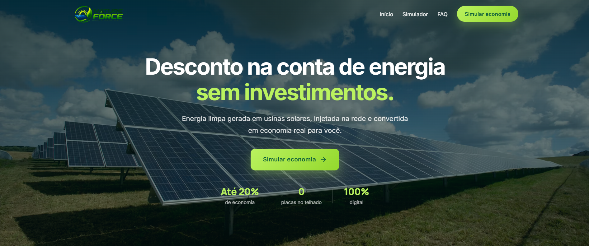

Desenvolvimento Web
Criação de sites, aplicações e sistemas web.
Ver projetosDesenvolvedor Web & Suporte Técnico
Desenvolvo aplicações web e soluções digitais, unindo experiência prática em tecnologia, suporte técnico, redes e infraestrutura.

Sou estudante de Análise e Desenvolvimento de Sistemas e profissional da área de tecnologia, com experiência prática em suporte técnico, redes, infraestrutura e desenvolvimento de soluções digitais.
Minha trajetória começou na área técnica, trabalhando diretamente com equipamentos, conectividade, redes e resolução de problemas. Ao longo dessa experiência, passei a desenvolver aplicações e sistemas para atender necessidades reais de negócios.
Atualmente direciono minha evolução profissional para o desenvolvimento web, sem deixar de lado a experiência adquirida em infraestrutura e suporte técnico.
Sites, landing pages e aplicações
Diagnóstico, manutenção e atendimento
FTTH, conectividade e infraestrutura
Profissional de tecnologia e estudante de ADS, com experiência prática em desenvolvimento web, suporte técnico, redes e infraestrutura. Minha trajetória combina conhecimento técnico de campo com desenvolvimento de soluções digitais.
Criação de sites, aplicações e sistemas web.
Ver projetosSuporte técnico, redes e infraestrutura.
Experiência técnica
Sistema Web / SaaS
Sistema desenvolvido para gerenciamento de pequenos provedores de internet.

Landing Page / Projeto Comercial
Website institucional e comercial desenvolvido para uma empresa de energia solar por assinatura.

Site Institucional
Site institucional desenvolvido para provedor de internet, apresentando planos e serviços de fibra óptica.

Landing Page
Landing page em evolução para restaurante e bar, com foco em apresentação comercial e contato rápido.
Estou aberto a oportunidades nas áreas de desenvolvimento web, suporte técnico, infraestrutura e tecnologia.